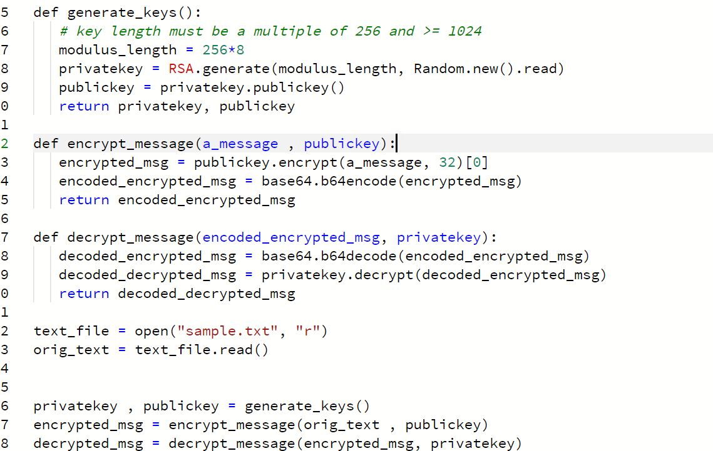
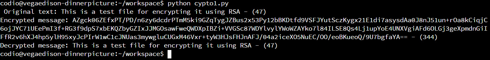
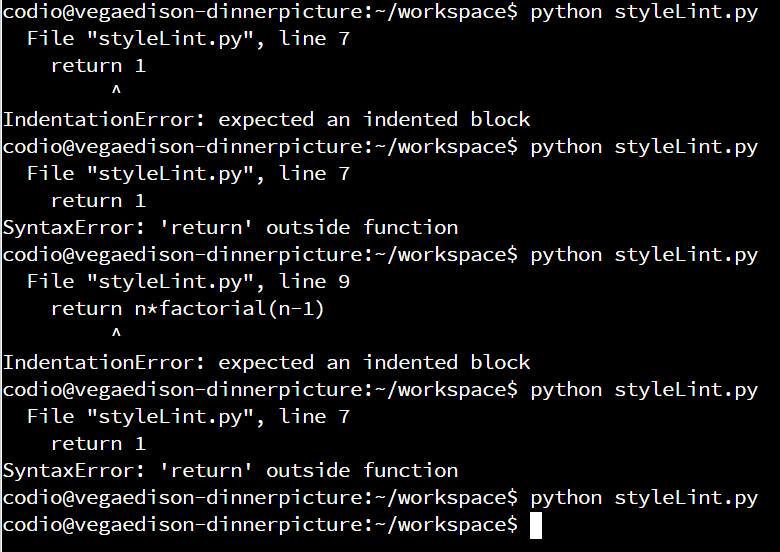
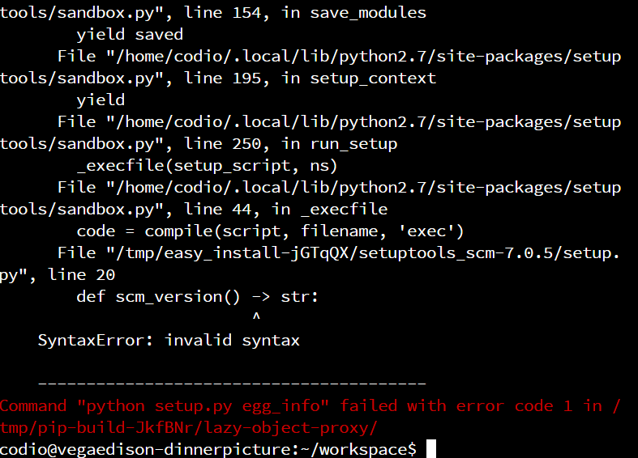
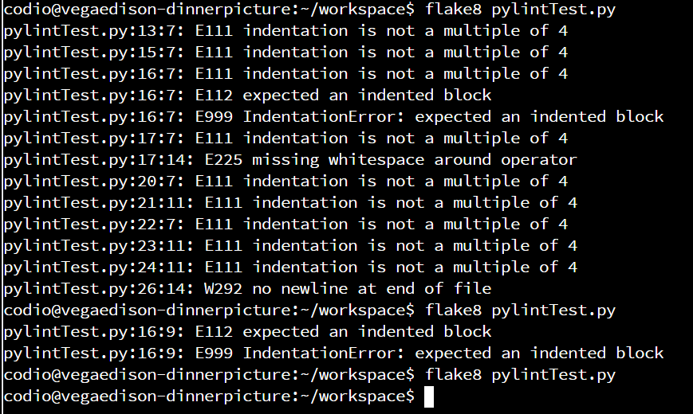
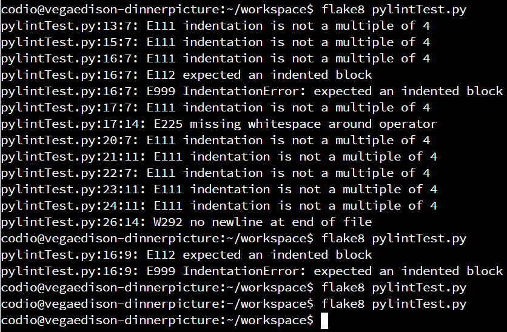
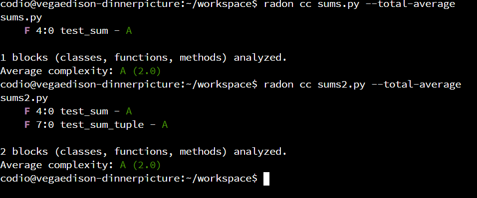

The focus of unit 4 was on testing code and software in a structured and efficient way with a strong focus on security. Additionally activities around linters and cyclomatic complexity were carried out as well as the seminar 2 preparation activities on cryptography.
Seminar 2 preparation activity - CryptographyFor this activity I chose to implement a 2048 RSA algorithm implemented in python based on the example listed in tutorialpoints.com. I chose RSA because I wanted to practive hands on with assymetric encryption, a concept which always confused me in theory. I created a short text file in codio and adjusted the original code to use a 2048bits long key in order to make it more secure and potentially useful in a GDPR application. The relevant parts of the code and the output can be seen below:

And running the program:

Linters Activity
Question 1
Run styleLint.py in Codio.
What happens when the code is run? Can you modify this code for a more
favourable outcome? What amendments have you made to the code?

Question 2
"pip install pylint
Run
pylint
on pylintTest.py
Review each of the code errors returned. Can you correct each of the errors identified by pylint?
Before correcting the code errors, save the pylintTest.py file with a new name (it will be needed again in the next question)."
Unfortunately it was not possible to install pylint due to the following error, Q2 was not completed.

Question 3
Run flake8 on pylintTest.py
Review the errors returned. In what way does this error message differ from the error message returned by pylint?
--> the pylint exercise was not run due to installation issues, but as shown below the indentation errors were corrected:

Run flake8 on metricTest.py. Can you correct each of the errors returned by flake8? What amendments have you made to the code?

Multiple indentation issues were encountered in the code and after
several formating changes no errors are shown. Of course flake 8 does
not check for logical errors in the code itself.
Question 4
Unfortunately it was not possible to run mccabe on codio or locally due to the following error.:
However radon was installed and used instead. We can expect tha cyclomatic complexity will be identical as both programs contain one if statement despite sums2 performing two calculations. Our expectation is confirmed by randon calculating the same cc for both files as shown below:
Question 5
Today Cyclomatic Complexity is commonly considered in modules on testing the validity of code design today. However, in your opinion, should it be? Does it remain relevant today? Specific to the focus of this module, is it relevant in our quest to develop secure software? Justify all opinions which support your argument and share your responses with your team.CC can be a usefule metric but it needs to be considered within the context of the code in which it is examined. Other metrics such as number of lines of code can also be useful. CC as every such methodology can suffer from weaknesses and has been subjected to criticism. Some of it most probably stems from the generic difficulty of creating a general complexity metric by relying on properties of a specific program considering the vast range of programming environments, software development methodologies, and programming practices in general. To use a simple example , breaking a program into different functions can lead to a higher cc score but in reality such modularisation might decrease software complexity (Shepperd, 1988). This is just an example to show how contested the usage of metrics can become. On the other hand and considering such weaknesses such metrics can become useful indicators of complexity and potentially used in combination with eachother. Consequently, we could say that such metrics are still applicable today and they can be used to estimate complexity and maintainability but at the same time they should be used with an awarenes regarding their limitations.
References
Shepperd, M. (1988) A critique of cyclomatic complexity as a software metric, Software Engineering Journal 1988